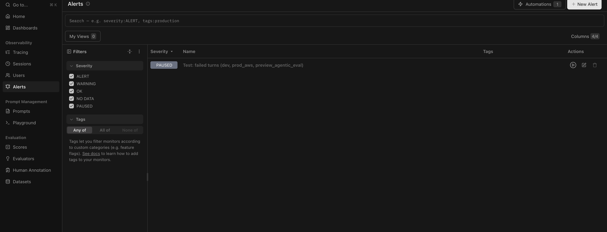

Open a trace and look at the tree view. Each row is an observation, and indentation shows parent and child. This is how you prove which node used the time or the budget.

Reading the tree
- Root: usually named like
chat-turn. Its duration and total cost should match what the traces list showed. - Router:
route-requestor the direct-recipe path. If this is slow or expensive, the routing prompt or catalog has grown. - Agent steps: one observation per graph step. Their children are the LLM and tool calls that step made.
- Generations: each LLM call shows its token counts and cost. Several planner generations in one turn usually mean ambiguous input or missing lookup results.
- Tool spans:
capability.invokelatency separates network or upstream slowness from model slowness.
A worked example
chat-turn 4.9 s $0.031
├── route-request 0.4 s $0.001
├── plan 1.3 s $0.011
├── invoke employees.search 0.3 s
├── plan 1.4 s $0.012 ← second planning pass
├── request_input (choice) 0.0 s
└── compose 1.5 s $0.007The user said "approver Sara". Two employees matched, so the planner ran a second time with both candidates and asked the user to choose. This is correct behaviour, and the tree shows exactly what it cost. If the second plan happened on every approver request, you would consider adding the user's manager to the lookup query, so that one match is usually found directly.
Why per-node cost matters
When product asks "why is this chat expensive?", you expand the tree, compare children by cost, and point to the specific planner and compose pair, or an extra retrieval call. That leads to targeted fixes, such as caching the catalog, shrinking the tool list or adding a direct recipe, instead of a blanket model downgrade that hurts quality everywhere.
Timeline view
Langfuse can also show observations on a timeline. Use it to spot sequential calls that could run in parallel. Two independent read capabilities called one after another are an easy latency win.
Terms on this page
- Span tree
- Hierarchical view of observations ordered by execution time.
- Generation observation
- Langfuse type for an LLM call with input/output token counts.